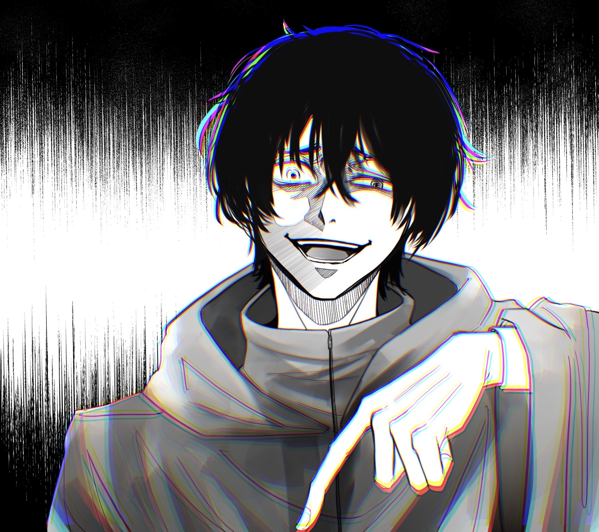

Katagiri Yuichi
Yuuichi Katagiri's past is somewhat a mystery currently, although it is known that Yuuichi has murdered three people and he has no idea who his real parents are. He was raised by his adopted mother Yuka Katagiri who had to sell herself to make money, which is a traumatic memory for Yuuichi.